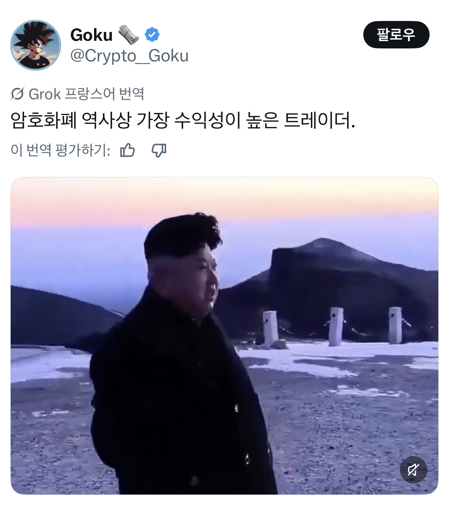

캬, 독재수저의 위엄
나라사업이 어떻게 해킹
0원 에서 조단위 수익
무에서 유를 창조하는 돼지수령놈
평단 0원의 씹새끼
머리 가발인가

트레이더trader가 아니라 레이더raider 아님? ㅋㅋㅋㅋ
올ㅋ
근데진짜 난놈이긴함 무기장사도 힘들고 땅덩어리에 뭐있는것도아닌데
꾸역꾸역 어떻게든 버티면서 밥달라고 시위중임
대체씨발 무슨수로 내부에서 반란같은게 안일어나는건지 모르겠네
근데 쟤넨 해킹기술이 그냥 넘사인거야 아니면 다른나라도 맘먹으면 하는건데 안하는거임??
둘 다 맞음
해킹할 정도로 도덕성, 신뢰도 없는 애들은 기술이 없고 기술이 있는 애들은 고작 그 돈에 신뢰를 걸 가치가 없는데 이새끼들은 어중간하게 기술있는데 도덕성 신뢰도는 바닥이라 좀 특이한 포지션이긴 함
하루 주갔어
트레이드가 아니자너 ㅋㅋㅋㅋㅋ
트레이더가 아니라 프레데터자나
트레이드 안 했잖아 시발아
평단가 0
단방향 트레이드
로그 트레이더
기쁨 조(단위)
이것이 무자본 창업의 힘인가?